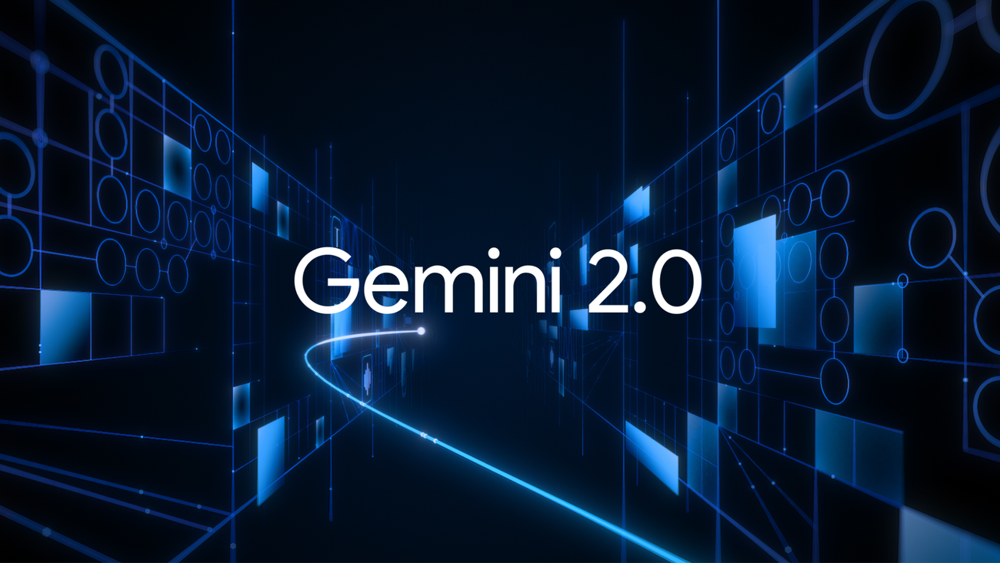

Google anuncia Gemini 2.0 para IA generativa
Google ha lanzado Gemini 2.0, la nueva versión de su modelo de inteligencia artificial generativa, con mejoras significativas.
Mejoras en IA
El modelo ahora puede generar contenido multimedia más complejo y responder en tiempo real con mayor precisión...
Integración
Gemini 2.0 estará integrado en productos como Google Search y Assistant a finales de 2025.